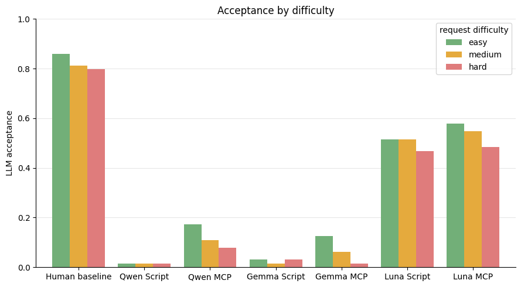
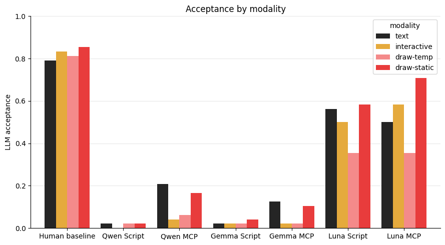
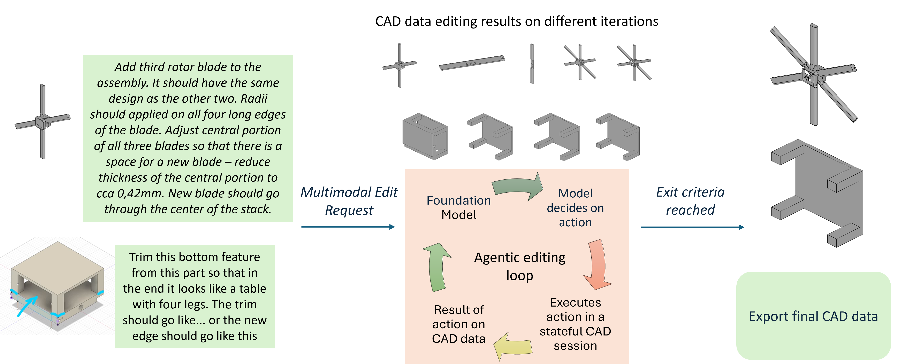
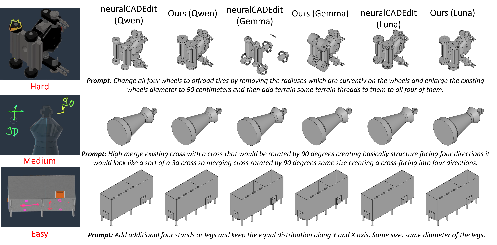
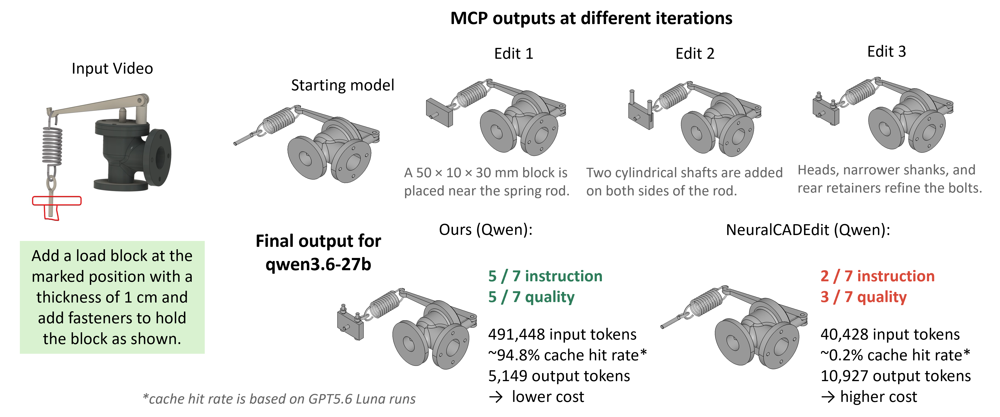

AgenticCADedit: A Stateful, Tool-Mediated Agentic Approach to Multimodal 3D CAD Editing
Abstract
Computer-aided design is central to industrial manufacturing, and much of a designer's daily work consists of editing existing models from multimodal requests involving speech, sketches, and model interaction. Existing neural CAD approaches focus predominantly on unconditional or text-conditioned generation. The neuralCAD-Edit approach formalizes expert multimodal editing requests, but its iterative baseline refines a complete CAD program across attempts, executing each attempt from the original model in a stateless CAD environment. Every attempt must therefore reconstruct the entire edit from scratch, so partially correct progress is discarded rather than accumulated, and the model can neither inspect the geometry it has just produced nor selectively revert a single faulty operation.
We present AgenticCADedit, which turns editing into a sequence of small, verifiable actions on a persistent CAD state instead of a single regenerated program. Rather than emitting one complete program, it applies incremental code steps that each commit to the session, inspects the resulting faces and edges, renders highlighted selections to verify that the intended region was addressed, and reverts individual operations when it was not. Subsequent actions therefore build on the geometry produced by earlier ones. Our approach improves on all metrics for all three evaluated LLMs (open-weight: qwen3.6-27b, gemma4-31b; proprietary: gpt-5.6-luna), with the largest gains for the weakest baseline model, qwen3.6-27b, whose validity rises from 51.0% to 94.8% and acceptance from 1.6% to 12.0%. A token-cost analysis with gpt-5.6-luna further shows 66.7% fewer output tokens than neuralCAD-Edit, while 94.8% of input tokens are served from the prompt cache.
Contributions
- We introduce multimodal editing of existing 3D solids as stateful incremental interaction rather than repeated full-program refinement. Each successful edit modifies a persistent CAD state on which subsequent actions operate, avoiding regeneration of the complete edit at every iteration.
- We design an editing-oriented MCP tool interface around a persistent CadQuery session that combines incremental code execution, numerical geometry inspection, face and edge enumeration, rendered verification of selected entities, and explicit state management through undo operations.
- We isolate the effect of the interaction paradigm on the neuralCAD-Edit benchmark, keeping benchmark and evaluation protocol fixed. Our approach improves all metrics for every evaluated open-weight and proprietary model while emitting fewer output tokens, with the largest gains for qwen3.6-27b.
MCP Tools Available During the Agentic Loop
| Category | Tool | Purpose | Returns |
|---|---|---|---|
| Edit | run_step |
Executes CadQuery code in the persistent session | Inspect summary and program output, or error message with traceback |
| Query | inspect |
Basic properties of the current model | Face and edge counts, axis-aligned bounding box |
list_faces |
Enumerates faces, sorted by area | Surface type, area, center, outward normal per face; total count | |
list_edges |
Enumerates edges, sorted by length | Edge type, length, center, radius for circles; total count | |
| Render | render_views |
Renders selected viewpoints, optionally highlighting faces or edges | One image per requested view |
| State | export_cad |
Exports the current CAD | Confirmation and path to the exported file |
undo |
Reverts the last successful edit | Updated model summary | |
reset |
Clears the complete session and edit history | Confirmation that the session was reset | |
| Virtual tool | finish |
Signals that the LLM considers the edit complete | Terminates the agentic loop after the current batch of tool calls |
Results
Mean over all tasks (N = 192)
Failed or invalid edits are scored as zero. The LLM is given in parentheses.
| edit_user | validity (%) ↑ | instruction ↑ | quality ↑ | acceptance (%) ↑ |
|---|---|---|---|---|
| Human baseline | 100.00 | 0.75 | 0.75 | 82.30 |
| neuralCAD-Edit (qwen3.6-27b) | 51.00 | 0.17 | 0.17 | 1.60 |
| Ours (qwen3.6-27b) | 94.80 | 0.32 | 0.39 | 12.00 |
| neuralCAD-Edit (gemma4-31b) | 40.10 | 0.19 | 0.15 | 2.60 |
| Ours (gemma4-31b) | 57.30 | 0.23 | 0.21 | 6.80 |
| neuralCAD-Edit (gpt-5.6-luna) | 96.40 | 0.57 | 0.57 | 50.00 |
| Ours (gpt-5.6-luna) | 99.00 | 0.59 | 0.60 | 53.60 |
Median over successful tasks
n_valid is the number of tasks that produced a valid, gradable CAD output file.
| edit_user | n_valid ↑ | chamfer_dist ↓ | iou ↑ | DINO-sim ↑ |
|---|---|---|---|---|
| Human baseline | 192 | 2.65 | 0.95 | 0.99 |
| neuralCAD-Edit (qwen3.6-27b) | 98 | 4.26 | 0.64 | 0.53 |
| Ours (qwen3.6-27b) | 182 | 3.72 | 0.71 | 0.57 |
| neuralCAD-Edit (gemma4-31b) | 77 | 9.41 | 0.54 | 0.62 |
| Ours (gemma4-31b) | 110 | 8.80 | 0.55 | 0.65 |
| neuralCAD-Edit (gpt-5.6-luna) | 185 | 3.15 | 0.83 | 0.63 |
| Ours (gpt-5.6-luna) | 190 | 2.98 | 0.87 | 0.64 |
Pairwise comparison on identical task sets
Both rows in a pair use the same LLM, evaluation protocol and task set, so any difference comes from the interaction paradigm alone.
| edit_user | chamfer dist ↓ | iou ↑ | DINO-sim ↑ | instruction ↑ | quality ↑ | acceptance (%) ↑ | n_tasks |
|---|---|---|---|---|---|---|---|
| neuralCAD-Edit (qwen3.6-27b) | 66.60 | 0.56 | 0.59 | 0.18 | 0.34 | 3.20 | 95 |
| Ours (qwen3.6-27b) | 21.84 | 0.60 | 0.61 | 0.36 | 0.42 | 15.80 | 95 |
| neuralCAD-Edit (gemma4-31b) | 58.47 | 0.49 | 0.60 | 0.23 | 0.35 | 5.60 | 71 |
| Ours (gemma4-31b) | 78.30 | 0.57 | 0.61 | 0.28 | 0.36 | 9.90 | 71 |
| neuralCAD-Edit (gpt-5.6-luna) | 24.38 | 0.66 | 0.64 | 0.58 | 0.60 | 52.20 | 184 |
| Ours (gpt-5.6-luna) | 24.21 | 0.69 | 0.65 | 0.60 | 0.61 | 55.40 | 184 |
Token cost (gpt-5.6-luna, all 192 tasks)
| System | Input tokens | Prompt cache hit | Output tokens | API cost |
|---|---|---|---|---|
| neuralCAD-Edit | 99.39 M | 0.2 % | 5.39 M | $26.30 |
| Ours | 301.37 M | 94.8 % | 1.80 M | $11.00 (−58.2 %) |
Acceptance by Difficulty and Modality
We break down LLM acceptance along two axes: the difficulty of the requested edit and the modality in which the edit is specified, reporting both for the human baseline and for all three model pairs. Acceptance generally decreases with request difficulty, most clearly for the human baseline and our agentic variants. Our approach yields substantial gains for qwen3.6-27b and gpt-5.6-luna across all difficulty levels and for gemma4-31b on easy and medium requests, while hard requests remain particularly challenging for the open-weight models. Interactive and draw-temp requests are the hardest modalities for the open-weight models, probably because cursor motion and transient annotations must be recovered from frame sequences; gpt-5.6-luna handles interaction substantially better, but draw-temp remains its weakest modality. Persistent draw-static annotations reduce this ambiguity and yield the highest acceptance, especially for gpt-5.6-luna. The human baseline stays ahead throughout, so there is clear scope for improvement.

Acceptance by difficulty. Our agentic session improves acceptance for qwen3.6-27b and gpt-5.6-luna on easy, medium and hard requests, and for gemma4-31b on easy and medium requests. Hard requests remain particularly challenging for the open-weight models.

Acceptance by modality. Interactive and draw-temp requests are hardest for the open-weight models, since cursor motion and transient annotations must be recovered from frame sequences. Persistent draw-static annotations reduce this ambiguity and give the highest acceptance, most notably for gpt-5.6-luna.
Modalities: text (instruction only), interactive (cursor motion recovered from frame sequences), draw-temp (transient annotation), draw-static (persistent annotation). Script denotes the neuralCAD-Edit full-program refinement baseline, MCP our stateful tool-mediated session. Acceptance requires both the instruction-following and model-quality rating to be at least 5 out of 7.

Overview of AgenticCADedit: the foundation model decides on an action, executes it in a stateful CAD session, observes the effect, and exports once the exit criteria are reached.

Qualitative comparison across easy, medium and hard editing requests for neuralCAD-Edit and our approach, each instantiated with qwen3.6-27b, gemma4-31b and gpt-5.6-luna.

Ablation of the agentic session: intermediate states after each operation (load block, bolt shafts, heads and retainers) compared with the final output of full-program refinement.
BibTeX
@article{sinha2026agenticcadedit,
title={AgenticCADedit: A Stateful, Tool-Mediated Agentic Approach to Multimodal 3D CAD Editing},
author={Sinha, Saptarshi Neil and Goschke, Mika Silvan and K{\"u}hn, Paul Julius and Kuijper, Arjan and Weinmann, Michael},
journal={arXiv preprint arXiv:<ARXIV PAPER ID>},
year={2026}
}